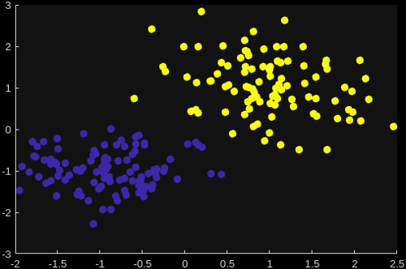

Usage
When working with MATLAB flavor models there are three main MATLAB functions to work with:
mlflow.matlab.save_modelto save a model in MLflow format to diskmlflow.matlab.log_modelto log a model in MLflow model format to an MLflow (compatible) servermlflow.matlab.load_modelto load a model from disk or an MLflow (compatible) server
MATLAB Functions
- mlflow.matlab.save_model(name=value, ...)
Save a MATLAB model to disk in MLflow format. The function can be called with various
name=valuepairs documented below.General Name-Value pairs
- Parameters:
Path – output path where the model should be saved.
none sub flavor sub flavor specific Name-Value pairs
- Parameters:
MATLABFiles – if set, includes the specified files and directories in the model as-is, this adds those files using the none sub flavor sub flavor.
onnx sub flavor sub flavor specific Name-Value pairs
- Parameters:
Network – if set, saves the model with onnx sub flavor sub flavor.
Networkmust be a Deep Learning Toolbox model which is compatible with theexportONNXNetworkfunction.
compiler_sdk_python sub flavor sub flavor specific Name-Value pairs
- Parameters:
FunctionFile – if set, saves the model with compiler_sdk_python sub flavor sub flavor.
FunctionFilethen specifies the main MATLAB entrypoint function of the model.NParams – specifies the number of parameters in the function signature of
FunctionFile. Defaults to0.AdditionalFiles – additional MATLAB files and directories to include in the Python package. This is essentially the same option as
AdditionalFilesofPythonPackageOptions.ExampleInputs – cell array of example inputs. When provided this is used to first automatically generate the function signature definition for the specified
FunctionFile. Can be omitted if a signature YAML-file for the function already exists.ExampleOutputs – cell array of example outputs. Can be used in combination with
ExampleInputs. If onlyExampleInputsis set, the function will actually be run with the provided inputs to obtain outputs and then determine the output types. If providingExampleOutputsas well, the function will not be run and the output types will be directly derived from the provided examples. Can be omitted if a signature YAML-file for the function already exists or if you indeed want the outputs to be determined by running the function.PackageName – sets the package name of the Python module which will be generated when working with the
FunctionFileoption. If unset this default to the filename ofFunctionFile.ExactDimensions – whether or not to include the exact dimension sizes of the provided example in- and outputs. When set to false, the correct number of dimensions is included with the model but their sizes are all set to
-1, indicating variable size. Set totrueif the exact dimension sizes should be derived from the example in- and outputs. Defaults tofalse.IncludeMPSCTF – if set to
true, apart from the MATLAB Compiler SDK Python module, also build and include a MATLAB Production Server CTF-archive in the saved model. This can only be used in combination withFunctionFile. Defaults tofalse.SaveExample – include the provided example input as actual MLflow model example input with the model. Defaults to
true.
- Param:
IncludeMATLABMLflowModule: whether or not to include the
matlab_mlflowPython module inside the model. If the module is included, other MLflow tooling will not have to download the module at runtime. Defaults totrue.
Advanced Name-Value pairs
- Parameters:
SubFlavor – can be specified to explicitly override which sub flavor to use for saving the model. Setting this is not recommended. Normally the sub flavors are automatically derived from which of the name value pairs above were used. Valid values are:
"none","onnx", or"compiler_sdk_python".MLflowOptions – cell array with additional keyword arguments to pass to the underlying Python functions.
- mlflow.matlab.log_model(name=value, ...)
Logs a MATLAB model to an MLflow (compatible) server. The function can be called with various
name=valuepairs documented below.See MLflow Tracking servers to learn more about configuring the tracking URI before logging to a remote server,
General Name-Value pairs
- Parameters:
Path – output path inside the MLflow model inside which the model artifact should be saved. Defaults to
"model".
none sub flavor sub flavor specific Name-Value pairs
- Parameters:
MATLABFiles – if set, includes the specified files and directories in the model as-is, this adds those files using the none sub flavor sub flavor.
onnx sub flavor sub flavor specific Name-Value pairs
- Parameters:
Network – if set, logs the model with onnx sub flavor sub flavor.
Networkmust be a Deep Learning Toolbox model which is compatible with theexportONNXNetworkfunction.
compiler_sdk_python sub flavor sub flavor specific Name-Value pairs
- Parameters:
FunctionFile – if set, logs the model with compiler_sdk_python sub flavor sub flavor.
FunctionFilethen specifies the main MATLAB entrypoint function of the model.NParams – specifies the number of parameters in the function signature of
FunctionFile. Defaults to0.AdditionalFiles – additional MATLAB files and directories to include in the Python package. This is essentially the same option as
AdditionalFilesofPythonPackageOptions.ExampleInputs – cell array of example inputs. When provided this is used to first automatically generate the function signature definition for the specified
FunctionFile. Can be omitted if a signature YAML-file for the function already exists.ExampleOutputs – cell array of example outputs. Can be used in combination with
ExampleInputs. If onlyExampleInputsis set, the function will actually be run with the provided inputs to obtain outputs and then determine the output types. If providingExampleOutputsas well, the function will not be run and the output types will be directly derived from the provided examples. Can be omitted if a signature YAML-file for the function already exists or if you indeed want the outputs to be determined by running the function.PackageName – sets the package name of the Python module which will be generated when working with the
FunctionFileoption. If unset this default to the filename ofFunctionFile.ExactDimensions – whether or not to include the exact dimension sizes of the provided example in- and outputs. When set to false, the correct number of dimensions is included with the model but their sizes are all set to
-1, indicating variable size. Set totrueif the exact dimension sizes should be derived from the example in- and outputs. Defaults tofalse.IncludeMPSCTF – if set to
true, apart from the MATLAB Compiler SDK Python module, also build and include a MATLAB Production Server CTF-archive in the logged model. This can only be used in combination withFunctionFile. Defaults tofalse.SaveExample – include the provided example input as actual MLflow model example input with the model. Defaults to
true.RegisteredModelName – when set also immediately registers the model as registered model under the specified name.
- Param:
IncludeMATLABMLflowModule: whether or not to include the
matlab_mlflowPython module inside the model. If the module is included, other MLflow tooling will not have to download the module at runtime. Defaults totrue.
Advanced Name-Value pairs
- Parameters:
SubFlavor – can be specified to explicitly override which sub flavor to use for logging the model. Setting this is not recommended. Normally the sub flavors are automatically derived from which of the name value pairs above were used. Valid values are:
"none","onnx",or"compiler_sdk_python".MLflowOptions – cell array with additional keyword arguments to pass to the underlying Python functions.
- mlflow.matlab.load_model(source, destination)
Returns the location of (a local copy of) the specified MATLAB flavor MLflow model. Since MATLAB (MLflow) models are typically simply just a collection of files this does not involve and real loading (into memory), instead the function simply returns the location on local disk such that you can then
cdto this location oraddpaththe directories to the MATLABPATH. Nevertheless the function is calledload_modelto be in line with other MLflow flavors.When
sourceis a model which is already located on local disk, by default the original location is simply returned, no copies are made. If you do wish a copy to be made, also specifydestination.When
sourceis a remote model on an MLflow (compatible) server, the model is first downloaded to a local location. Specifydestinationif you wish to specify where the local copy should be located. Ifdestinationis omitted a temporary location is automatically generated.See MLflow Tracking servers to learn more about configuring the tracking URI before loading from a remote server,
- Parameters:
source – location of the model to load. This can be a local path on disk or refer to MLflow server style
model:orrun:URIs or even custom URI schemes provided by MLflow custom storage plugins e.g.azureml:(if the relevant plugin is installed in the MATLAB Python environment).destination – for local models, specifies in which location a copy of the model should be made first. For remote models specifies to which location the model should be downloaded first. If omitted for local models, no copy is made and simply the original location is returned. If omitted for remote models, the model is downloaded to a automatically generated temporary location first.
- Returns:
the location of the local (copy) of the model.
Example
MATLAB Function
In this example we use a MATLAB function as the model which we want to work with in MLflow:
function tOut = myClustering(tIn,replicates)
% CLUSTER clusters the data from the input table into two clusters.
%
% Input table tIn is expected to have two columns: X and Y. The output
% table is a copy of the input table with an additional column "index"
% appended which indicates the cluster which the data row belongs to.
%
% Parameter replicates configures how many replicates kmeans will use.
% Copy the input to the output
tOut = tIn;
% Perform the clustering and append the result as additional column
tOut.index = kmeans(tIn{:,["X","Y"]},2,'Distance','cityblock',...
'Replicates',replicates);
This function can cluster data from an input table into two clusters. And in MATLAB it can for example be used as follows:
% Generate example input data
>> tIn = table;
>> tIn.X = [randn(100,1)*0.75+ones(100,1); randn(100,1)*0.5-ones(100,1)];
>> tIn.Y = [randn(100,1)*0.75+ones(100,1); randn(100,1)*0.5-ones(100,1)];
% Call the function
>> tOut = myClustering(tIn,5)
tOut =
200×3 table
X Y index
________ _________ _____
1.2491 0.73961 2
-0.3184 1.2484 2
1.3544 0.36121 2
1.5996 0.54201 2
0.40121 0.53412 2
: : :
-1.4744 -1.1326 1
-1.1056 -0.57115 1
-1.4302 -0.72716 1
-0.59563 -0.073124 1
-0.75538 -0.50195 1
Further, you could then visualize the results using:
>> scatter(tOut.X,tOut.Y,50,tOut.index,"filled")

MATLAB MLflow Model
Now one of the things we can do with this function is log it on our MLflow server as MATLAB code that can later be used in MATLAB again. In this example we use a local server running at http://localhost:5000. To instruct MATLAB to work with this we can use:
>> mlflow.set_tracking_uri("http://localhost:5000")
Or alternatively this can also be configured using environment variable
MLFLOW_TRACKING_URI.
Further, when you want to log a model you do that as part of a run in a particular experiment. This is especially useful if your model needs to be trained, you can then track how the model was trained exactly (e.g. with which parameters and which data). Now that is not the case for our model here, but we will still want to follow this MLflow convention. So we first set an experiment and start a run using the Fluent Interface:
>> mlflow.set_experiment("My MATLAB Clustering Model")
>> mlflow.start_run()
And then we can use mlflow.matlab.log_model to log the model. Since we already know we want to be able to easily re-use this model we will also immediately register it as a registered model:
>> mlflow.matlab.log_model(MATLABFiles="myClustering.m",RegisteredModelName="myMATLABClustering");
Successfully registered model 'myMATLABClustering'.
2026/03/13 11:40:17 INFO mlflow.store.model_registry.abstract_store: Waiting up to 300 seconds for model version to finish creation. Model name: myMATLABClustering, version 1
Created version '1' of model 'myMATLABClustering'.
Hint
If you are not sure yet whether your model in question should really become a registered model, you can simply omit the entire RegisteredModelName option. You can then still later register the model, you do not have to “re-log” the model for this.
After that we end the run:
>> mlflow.end_run()
🏃 View run delicate-mink-467 at: http://localhost:5000/#/experiments/1/runs/11c3fb2acf1a489c8727f905a1b42c87
🧪 View experiment at: http://localhost:5000/#/experiments/1
Now let’s say that some time later, you want to re-use this model in MATLAB. Then, since we registered the model, we can easily get to it using a models:/ MLflow URI:
>> loc = mlflow.matlab.load_model("models:/myMATLABClustering/1")
loc =
"/tmp/tmpa7swg9y_/matlab"
As we can see this returned a (temporary) location on disk which the model got downloaded to, and if we look at that location we indeed see our MATLAB function there:
>> ls(loc)
myClustering.m
We can now copy this elsewhere, use addpath to add this location to the MATLABPATH, or just cd to the location and work with the function there. Alternatively we could also have provided a second input to load_model to specify the location which the model should be downloaded to.
Hint
If we would not have registered the model as a registered model, we could not have easily accessed it by its name but it can still be accessed by its ID (models:/EnterModelIdHere). Where this model ID could for example be found through the MLflow server web interface or programmatically by querying the run:
>> r = mlflow.get_run('11c3fb2acf1a489c8727f905a1b42c87');
>> r.outputs.model_outputs{1}.model_id
ans =
Python str with no properties.
m-8e8937c7c57a4099ad0605d619b1d9e4
Where the run ID 11c3fb2acf1a489c8727f905a1b42c87 was returned when we called mlflow.end_run(), see above. If you no longer have the run ID either, you could try searching for it:
>> runs = mlflow.search_runs(experiment_names={"My MATLAB Clustering Model"});
>> runs.table
ans =
1×10 table
run_id experiment_id status artifact_uri start_time end_time tags.mlflow.source.type tags.mlflow.user tags.mlflow.source.name tags.mlflow.runName
__________________________________ _____________ __________ ________________________________________________________________ ____________________ ____________________ _______________________ ________________ _______________________ ____________________
"11c3fb2acf1a489c8727f905a1b42c87" "1" "FINISHED" "mlflow-artifacts:/1/11c3fb2acf1a489c8727f905a1b42c87/artifacts" 13-Mar-2026 14:48:32 13-Mar-2026 14:48:43 "LOCAL" "user" "" "delicate-mink-467"
Pyfunc compatible MLflow Model
But what if we want this model to also be useable outside of MATLAB? For example in Python or by hosting it as RESTful endpoint using MLflow model serving. In that case we can log our model with the compiler_sdk_python sub flavor by using:
% Start a run
mlflow.set_experiment("My MATLAB Clustering Model");
mlflow.start_run();
% Generate an example input
tIn = table;
tIn.X = [randn(100,1)*0.75+ones(100,1); randn(100,1)*0.5-ones(100,1)];
tIn.Y = [randn(100,1)*0.75+ones(100,1); randn(100,1)*0.5-ones(100,1)];
% Use mlflow.matlab.log_model to log the model
mlflow.matlab.log_model( ...
... This time we use FunctionFile to indicate that we want to create a
... compiler_sdk_python sub flavor model with this function as main
... entry point
FunctionFile="myClustering.m", ...
... To be able to create such kind of models, the in- and output data
... types must be known. The easiest way to specify this is by
... providing example inputs, we provide the example table as input
... as well as a value for the "replicates" parameter
ExampleInputs={tIn,5},...
... Further we need to specify how many of such parameters there are
NParams=1,...
... Finally we also register this model as registered model
RegisteredModelName="myClustering")
% end the run
mlflow.end_run();
Now this model is not really reusable inside MATLAB, it only contains the generated Python package and we chose not to include the original MATLAB code as well. So let’s switch to Python to call the model. Before we can do that though; it is important to note that the MATLAB Runtime is required at runtime, so make sure it is installed and PATH or LD_LIBRARY_PATH are configured correctly before starting Python. Once we have done that, we can run the following inside Python:
>>> # Import the MLflow module
>>> import mlflow
>>> # Configure the tracking URI
>>> mlflow.set_tracking_uri("http://localhost:5000")
>>> # Load the model
>>> model = mlflow.pyfunc.load_model("models:/myClustering/1")
>>> # Since the input example is also saved with the model, see:
>>> model.input_example
X Y
0 0.713541 0.945551
1 -0.028403 1.569334
2 1.007731 0.938752
3 1.153099 0.881145
4 0.691731 1.004874
.. ... ...
195 -1.690718 -0.887948
196 -0.435860 -1.233068
197 0.232720 -1.166043
198 -1.778959 -0.537593
199 -2.033324 -0.276487
[200 rows x 2 columns]
>>> # We can easily reuse it to quickly call the model
>>> result = model.predict(model.input_example,params={'replicates':5.0})
>>> # And see the result
>>> result
X Y index
0 0.713541 0.945551 1.0
1 -0.028403 1.569334 1.0
2 1.007731 0.938752 1.0
3 1.153099 0.881145 1.0
4 0.691731 1.004874 1.0
.. ... ... ...
195 -1.690718 -0.887948 2.0
196 -0.435860 -1.233068 2.0
197 0.232720 -1.166043 2.0
198 -1.778959 -0.537593 2.0
199 -2.033324 -0.276487 2.0
[200 rows x 3 columns]
Or instead of calling the model from Python, we can also use the MLflow model serving feature to host the model. Again this requires a MATLAB Runtime to be available, make sure it is configured before running the following to serve the model:
$ export MLFLOW_TRACKING_URI=http://localhost:5000
$ mlflow models serve -m 'models:/myClustering/1' --port 5001 --env-manager uv
Where you can replace
uvwith the environment manager of your choice.
After which we can for example use curl to call the /invocations endpoint. This requires an input body in the correct format and for our model here, this will look something like:
{
"dataframe_split": {
"columns": [
"X",
"Y"
],
"data": [
[
0.7135410595364997,
0.9455510008911132
],
[
-0.028403127622235624,
1.5693335801546189
],
…
]
},
"params": {
"replicates": 5.0
}
}
Luckily the package generated such an input based on the example MATLAB input which we provided. It will have created a file named serving_input_example.json next to the MATLAB code. We can use that file as an input to curl to invoke the model:
$ curl http://localhost:5001/invocations -H "Content-Type: application/json" --data @serving_input_example.json
{"predictions": [{"X": 0.7135410595364997, "Y": 0.9455510008911132, "index": 1.0}, …